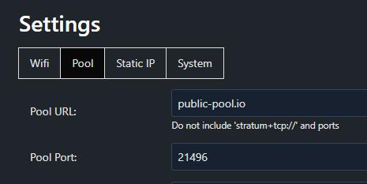
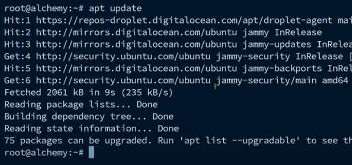
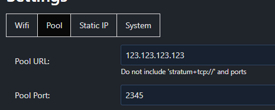

How to use redir for mining pool forwarding?no pumping
We will use an example as an illustration. For example, the mining pool that needs to be connected is: stratum+tcp://public-pool.io:21496
Among them, stratum+tcp:// represents the protocol, and there is also a more popular stratum+ssl://. Currently bitdsk only supports the former, which is tcp.
public-pool.io represents the mining pool server address that needs to be connected
21496 represents the connected port.
The corresponding background configuration is filled in like this:

The following explains how to forward
1: You need to purchase a cloud server, preferably one from abroad that can be accessed normally. Recommend a URL where you can find these resources: Google search: vpser
Note: You need some knowledge to ensure that you can manage and run this cloud server
2: Use ssh software to log in to the cloud server and run the command to update the system (here, the ubuntu/debian system is taken as an example)
sudo apt-get update
3: Install redir after the update is complete
sudo apt-get install redir4: Configure redir after installation is complete
Command: sudo redir:
eg：
sudo redir :2345 public-pool.io:21496note: colons and spaces are all in English format
5: Modify the bitdsk background mining pool configuration. For example, the IP address of the cloud server I purchased is: 123.123.123.123

6: Save and restart bitdsk